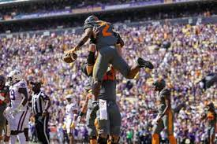

Tennessee Beatdown of LSU in Louisiana
BATON ROUGE, La. -- — As dynamic quarterback Hendon Hooker and his Tennessee teammates left the field in a mostly empty Tiger Stadium, nearly all the fans who remained were wearing orange and belting out the lyrics to “Rocky Top." Hooker passed for two touchdowns, Jabari Small ran for 127 yards and two scores, and No. 8 Tennessee punished No. 25 LSU for its mistakes and risk-taking in a resounding 40-13 victory on Saturday. A morning kickoff lured fans to Death Valley earlier than usual — and many were gone by the end of the third quarter, when Tennessee led 37-7. The Volunteers (5-0, 2-0 Southeastern Conference) matched their best start to a season since 2016 with balance on offense, sound defense that corralled dual-threat LSU QB Jayden Daniels, and opportunistic special teams play. “We have found a way to be the best team on the field the last five weeks,” Tennessee coach Josh Heupel said. “Our players have worked hard and more importantly expect to play very well. They expect to win.” The dominant Tennessee triumph in Tiger Stadium will only add to the hype surrounding the Volunteers' next game — a home date with SEC powerhouse and historical rival in No. 1 Alabama. “Everybody understands the opponent that we have coming in,” Heupel said. “It’s important that the staff and the players enjoy this win on the ride home, but turn to the next one tomorrow.” Hooker passed for 239 yards against LSU (4-2, 2-1), with scoring passes of 45 and 14 yards to Jalin Hyatt. The fleet-footed QB also accounted for 56 of Tennessee's 264 yards on the ground. Bru McCoy caught seven passes for 140 yards, drawing howls of “Bruuuuuuu!” from Tennessee fans. Tennessee sacked Daniels five times with Byron Young accounting for half of that total. “They were able to dominate and control the line of scrimmage,” Heupel said of Tennessee's defensive front. "There wasn’t anywhere for (Daniels) to escape.” Daniels finished 32 of 45 for 300 yards and a TD to go with 38 yards rushing. But LSU rushed for just 55 yards. LSU's combination of early special teams failures and costly fourth-down risks helped Tennessee build a quick double-digit lead. Jack Bech had the opening kickoff bounce off his chest and straight to Tennessee's Will Brooks at the Tigers' 27-yard line. “Bech is the best guy we have” to return kickoffs,” LSU coach Brian Kelly insisted, noting that Tennessee's kick into the wind fell relatively short. “He’s got to haul up there and catch that football.” Five plays later, Small ran for a 1-yard score. “We were extremely pumped,” Hooker said. “It got us off to the kind of start we needed.” Minutes later, the Vols' offense was back on the LSU 26 after Dee Williams' 58-yard punt return, setting up Chase McGrath's 35-yard field goal. “We expected to play much better,” Kelly said. “When you fumble the opening kickoff and give an extra possession to a team that plays fast and loves extra possessions ... you put yourself in a huge hole.” LSU missed a chance to trim its deficit when Kelly kept the offense on the field on fourth and 4 from the UT 14. A quick pass to Kayshon Boutte came up inches short. Leading 13-0, Tennessee thwarted LSU on fourth and 1 near midfield, stopping Josh Williams' run. On the next play, Hooker's deep throw down the right sideline hit Hyatt in stride to make it 20-0. The Tigers pulled to 20-7 on Williams' 1-yard run. And momentum briefly appeared to be turning when McGrath's 50-yard field goal attempt hit the post and LSU quickly drove across midfield in the final minute of the half. But when LSU stalled at the UT 45, Kelly kept the offense on the field on fourth-and-10 and Daniels was sacked by Young. Kelly said his fourth-down decisions stemmed from “necessity." “I felt like we had to make something happen in those situations,” Kelly said. "I just felt like we needed to continue to be aggressive.” Hooker's 32-yard pass to McCoy to set up a short McGrath kick that made it 23-7 at the half.
 Highlights of Game